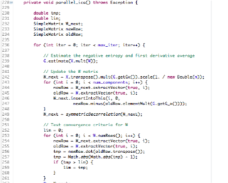
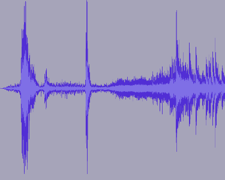
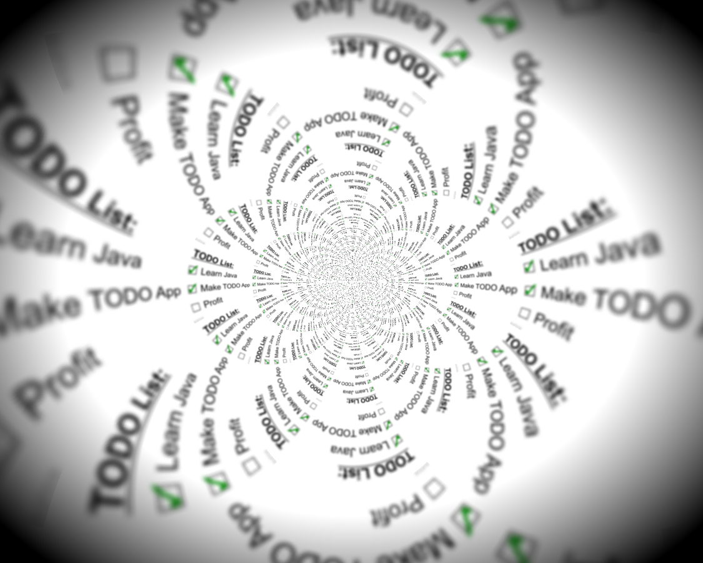

-

Students.Filters
Filter package for WEKA implementing the FastICA Independent Components Analysis algorithm.
The package is written in Java and released to the public domain under the UNLICENSE. It uses the Efficient Java Matrix Library (EJML) and integrates with the WEKA toolkit.
-
Chessnut
A minimal chess game model library that is able to find & validate legal moves.
Chessnut is written in Python and packaged for distribution on PyPI. It has been released to the public domain under the UNLICENSE.
-
Resound App
A live demo web app using the Resound library to identify recent number one US pop songs from short song clips recorded with HTML5.
ResoundApp is written in Python using the Google App Engine framework and datastore. It has been released to the public domain under the CC0 license.
-

Resound
Audio fingerprinting library based on the algorithm used by the popular Shazam app.
Resound is written in Python (requires Numpy) and packaged for distribution on PyPI. It has been released to the public domain under the CC0 license.
-

TODO API
Web app and API backend built as part of a software engineering class at Georgia Tech.
TODO API is written in Python using the Flask microframework and SQLAlchemy. It synchronizes with an Android app written in Java with the Android SDK.
-
TrafficMat
At-a-glance traffic updates in a single page Javascript web app that uses HTML5 to allow a Google Map with traffic layer for a specific location to persist between sessions.
TrafficMat is written in Javascript using HTML5 features & the Google Maps API.
-
Wine Rack API
Prototype REST API using Django & on Heroku.
The Wine Rack API is written in Python using Django and Django-RestFramework.
Experience
I am a systems engineer at the Naval Air Warfare Center Aircraft Division, Patuxent River (NAWCAD). As the lead systems engineer for several types of air-launched weapons, I am responsible for ensuring that those weapons safely and reliably meet Navy requirements. I also moonlight as a grad student in Computer Science at Georgia Tech, specializing in Interactive Intelligence & Machine Learning.
Since 2008, I have applied sound mechanical and software engineering principles in warhead development, operations research, advanced technology development & evaluation, rocket motor production, and systems engineering. My varied experience gives me a broad perspective for recognizing and solving technical challenges across multiple disciplines. I look for hard problems to work on – and my experience demonstrates that I'm not afraid to learn complex new fields in order to be successful.
Systems Engineer – 2012
- • Developed safety & technical requirements for next-generation Rocket Assisted Take-Off (RATO) motor.
- • Resolved combustion instability in solid fuel rocket motor propellant to eliminate target drone crashes and resume production of legacy RATO motors.
- • Lead technical authority of a Joint Capability Technology Demonstration for a new, fixed-wing capable 2.75" rocket guidance section.
Advanced Technology Development – 2010
- • Developed comparative analysis of all planned US Navy air weapon acquisition investments relative to historical budgets for the Office of the Chief of Naval Operations, Air Warfare division.
- • Conducted technology evaluation for next-generation long-range rocket motors & airborne laser weapon demonstrations.
Operations Research Analyst – 2008
- • Used design of experiments to investigate insensitive munitions (IM) performance of Navy general purpose bombs by conducting a mixed-level, blocked fractional factorial experimental design with centerpoints to evaluate potential bomb liner constituent materials.
- • Developed and executed numerical & statistical models for warfare analysis simulations.
- • Built a sympathetic detonation model in CTH to simulate IM characteristics for GP bombs.
Education
Georgia Tech – 2016 (anticipated)
Masters of Science, Computer Science
Specialization in Interactive Intelligence
Cal Poly, San Luis Obispo - 2007
Bachelors of Science, Mechanical Engineering
Concentration in Mechatronics
Courses
- Software Development Processes [GT]
- Machine Learning [GT]
- Relational Databases [Stanford - IS]
- Machine Learning [Stanford - IS]
- Intro to Artificial Intelligence [Stanford - IS]
- Computer Vision [Cal Poly]
- Robotics [Cal Poly]
- Control Systems [Cal Poly]
Languages, Libraries, & Tools
- Python: Numpy/Scipy, Django, Flask, SqlAlchemy, Pandas, Nose
- Java: Android, JSP, Spring, JUnit, WEKA
- Scientific/Numeric Computing: Matlab & GNU Octave
- Web Development: JavaScript, HTML5, & CSS3
- Databases: SQLite, Postgres, GAE Datastore
- Version Control: Git
- Other: C and Go